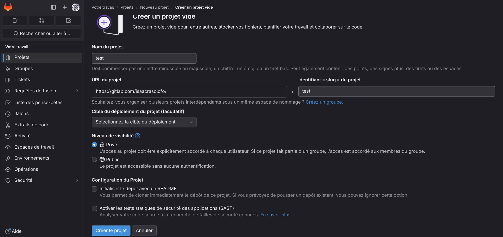
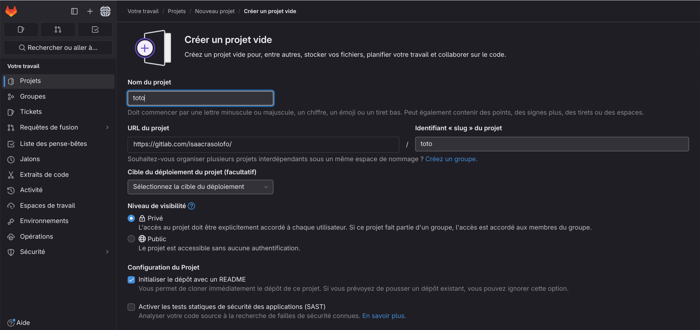

Versioning
Gestion de projet
La gestion de version est la pratique consitant a suivre et a gérer les changements apporté au code d'un logiciel (projet) elle permet de revenir a des version antérieur du projet, de travailler a plusieur et séquence un projet
Git et Gitlab
Git est un logiciel de versioning décentralisé il est libre et gratuit. Créé en 2005 par Linus Torvalds,
auteur du noyau Linux. Il a pour avantage d'être libre de droit, compatible avec les protocole HTTP/FTP/SSH, est performant et populaire
Pour utiliser git, il faut l'installer sur sa machine, ensuite configurer l'utilisateur:
-
git config --global user.name [Nom utilisateur] configure le nom de l'utilisateur
-
git config --global user.email [email utilisateur] configure l'email de l'utilisateur
Pour verifier si l'utilisateur a bien été configurer, il faut entrer git config user.[arg]
Dans ce cours nous utiliserons Gitlab (il existe aussi Github). Ils sont des plateforme de gestion de developpement de logiciel basée sur git. Se sont des outils de gestion de code source et de collaboration permettant aux developpeur de travailler ensemble sur des projets logiciel. Il possede egelement une interface web, un systeme d'hebergement de code, un systeme de pull.
Pour permettre la communication entre notre pc et Gitla, nous allons utiliser le protocole SSH.
Pour cela, il faut créer un couple de clés publique/privée avec la commande ssh-keygen -t rsa -b 2048 -C [email utilisateur] (laisser les parametre par défaut).
Ensuite, une fois la pair de clé SSH créer, il faut l'entrer dans Gitlab, c'est le fichier ~/.ssh/id_rsa.pub.
Les base de git
respository
Ceci est l'idée genéral du fonctionnement de git
-
git init Permet de créer un nouveau respository (c'est un espace de stockage de données versionnée et géré par git sur la machine. c'est une sorte de dossier ou Git enregistre toutes les informations concernant l'historique des modifications apporté au projet) en local.
-
git add [fichier a ajouter] Ajoute les fichiers a l'index/staging Area (C'est un espace temporaire qui conteint les modif que vous avez décidé d'inclure dans le prochain commit. les fichiers ajouté dans l'index sont prêt a être enregistrer dans la prochaine version du projet).
-
git status Permet de voir les changements depuis la derniere sauvegarde dans le respository local.
-
git commit -m "Message" Permet d'enregistrer les modifications de l'index/staging Area dans le respository local avec un message descriptif du commit.
-
git push Permet de pousser en ligne tous les commits locaux sur un respository distant.
au préalable il faut brancher le respository local au respository distant git remote add origin [lien ssh] -
git pull Permet de recuperer la derniere version des fichier sur un respository distant.
-
git clone [URL] Permet de recuperer un respository distant.
-
git log Permet d'avoir une liste des commit réaliser sur un projet.
-
git diff Permet de comparé les modifications entre 2 commit.
-
git blame [fichier] Permet de voir les auteur d'un fichier.
-
git reset [arg] Permet de revenir a un commit precedent. --hard supprime les commit qui sont apres le commit que l'on souhait.
-
git tag [nom d'un tag] Permet de créer un racourci lisible pour un humain pour s'y retrouver plus facilement
branche
Les branches permettent de travailler sur plusieur fonctionnalité différente sans que le travail d'un autre vous impacte et permet egalement de corriger les bug d'une ancienne fonctionnalité sans devoir intégrer les evolutions non validée.
-
git branch [nom de la branche] Permet de créer une nouvelle branche
-
git checkout [nom de la branche] Permet de se mettre sur une branche
-
git merge [nom de la branche] Permet de fusionner la branche avec la branche courante
-
git checkout --track -b [branch] origin/[branch] Permet de recuperer la branche sur le repo distant
Etapes
Initialisation
Dans un premier temp il faut initialiser le projet. Pour cela il y a 2 maniere :
-
Avec un respository/dépot local:
-
créer un dossier pour le pojet et dans le projet faire git init pour créer un respository/dépot local
-
Créer un respository/dépot local
Remarque: il faut que votre compte gitlab soit configurer pour pourvoir communiquer avec machine (SSH), egalement il faut que le respository/depot distant soit vide donc ne permetter pas la création du README. -
git remote add origin git@gitlab.com:[user]/[repo/depot git] va synchroniser les respository/depots local et distant
-
Initialiser votre projet (créer au moins 1 fichier)
-
git add . pour ajouter les fichiers dans l'index
-
git commit -m "initialisation projet" pour ajouter dans le respository/depot local les ajouts de l'index
-
git push --set-upstream origin --all pour envoyer le contenu du respository/depot local dans le distant et egalement les connecter pour la premiere fois
Remarque: par la suite les respository/depot local et distant etant a présent connecter, le --set-upstream origin --al ne sera plus necessaire.
-
-
Avec un respository/dépot distant:
-
Créer un respository/dépot local
Il faut que le respository/depot distant ne soit pas vide donc il faut permettre la création du README. -
Cloner le respository/depot distant sur votre machine avec git clone [URL] ceci va créer une copie du pojet en local. La synchronisation et la connection se fait egalement.
-
Entretiens
Lors de travail sur un projet, il est interressant de d'avoir un historique du projet. pour cela il faut regulierement sauvegarder grace a git les fonctionnalité ajouter a un projet. Pour cela:
-
git pull pour recuperer les possible modifications ajouter par les autre colaborateur
-
git add . pour ajouter a l'index les changement apporter au projet
-
git commit -m "message" pour ajouter l'index au respository/depot local
-
git push pour ajouter respository/depot local au distant
J'ai créer un respository distant qui rassemble les cours que j'ai fait jusqu'a maintenant, Vous pouvez créer un copie avec l'url suivant git@gitlab.com:isaacrasolofo/cours-hb-pe9.git. Si vous souhaitez y faire des test créer un branche a votre nom.